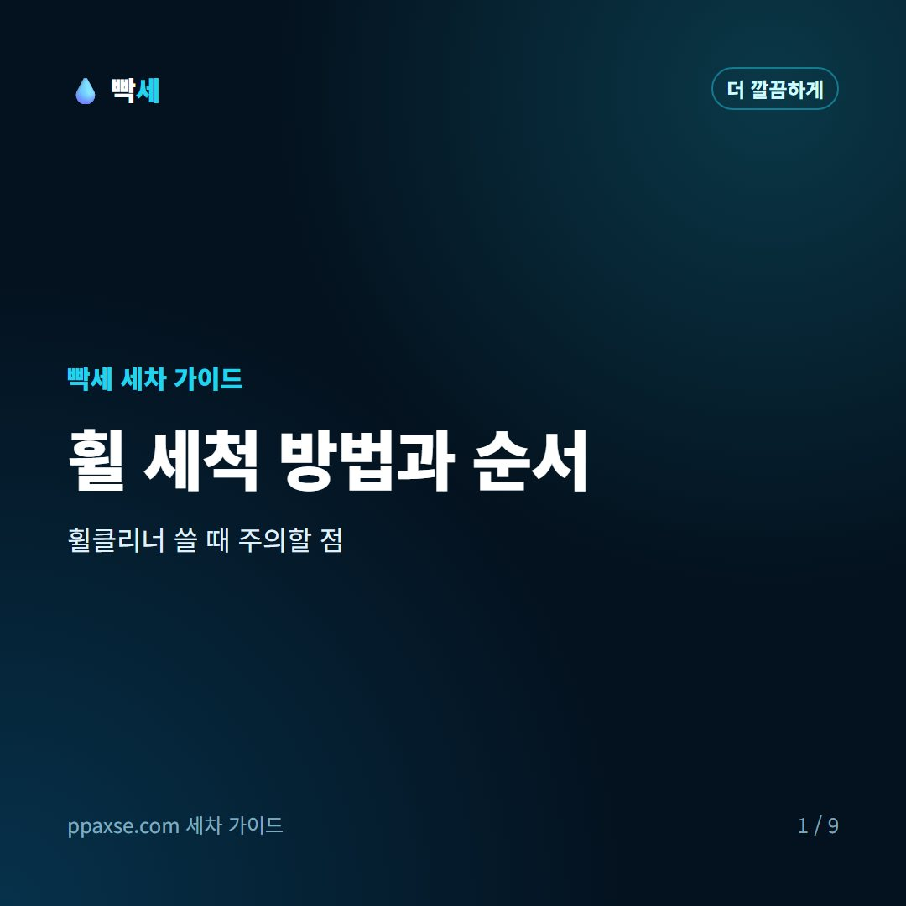
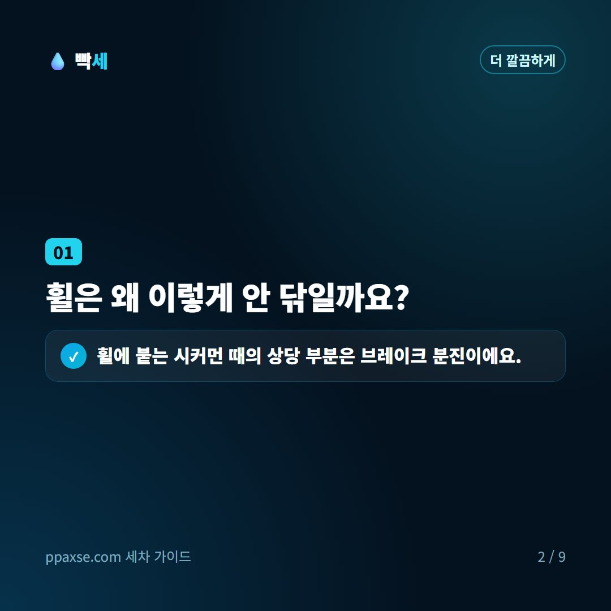
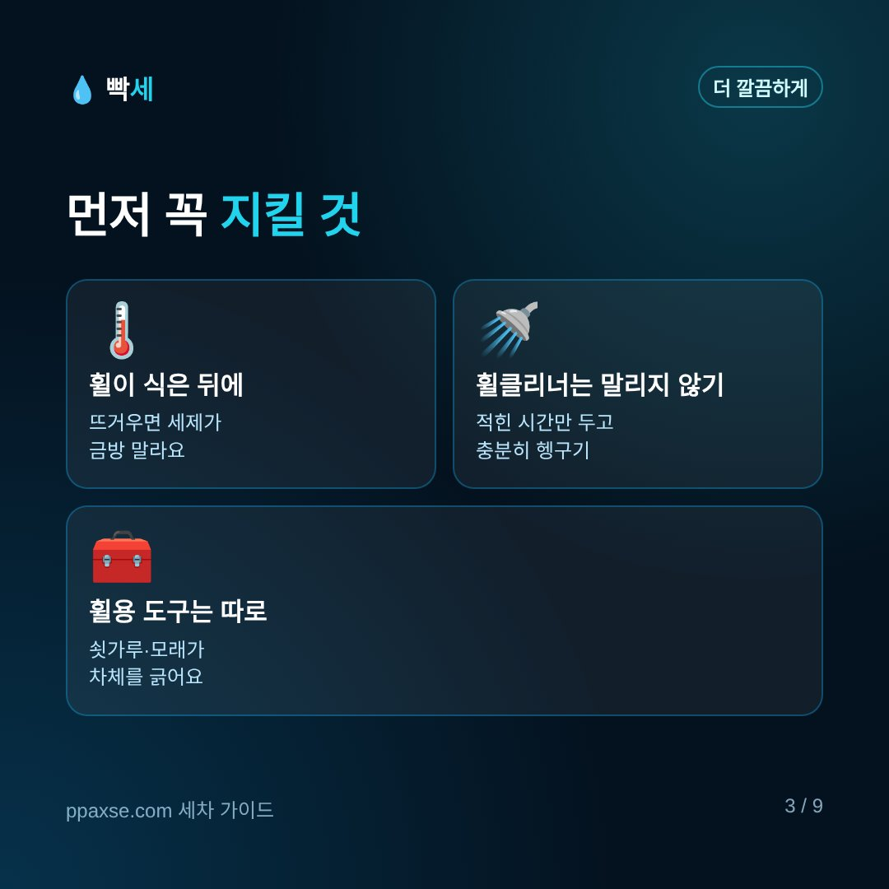
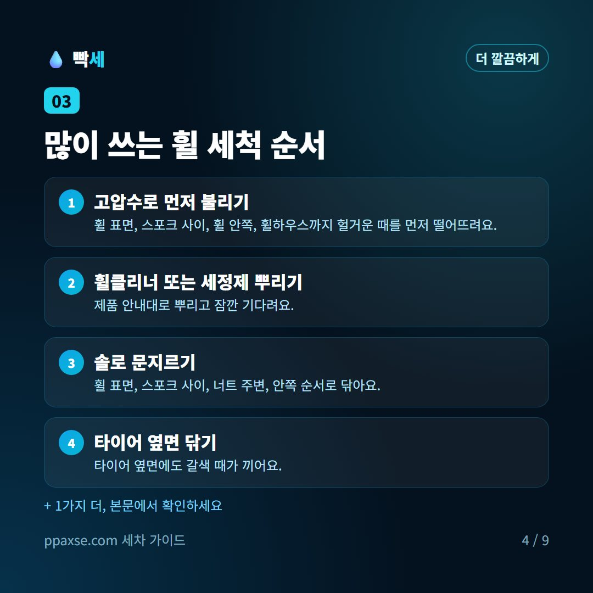
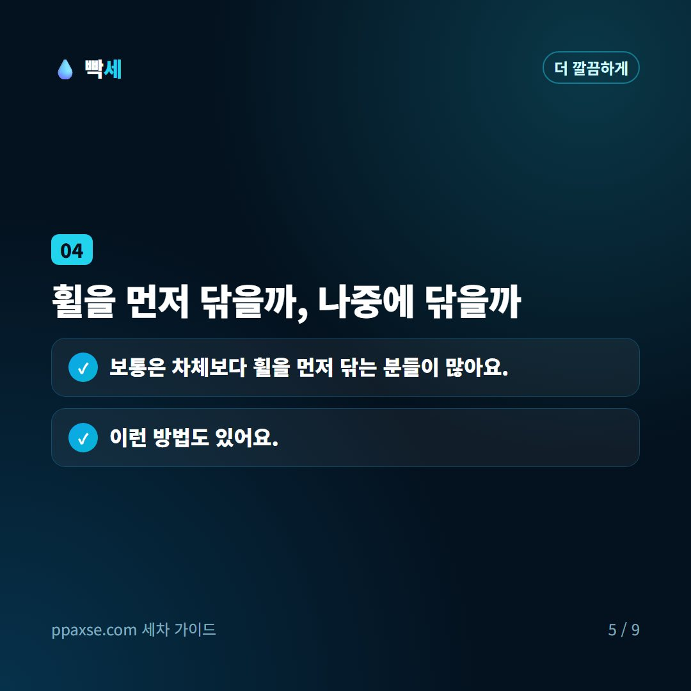
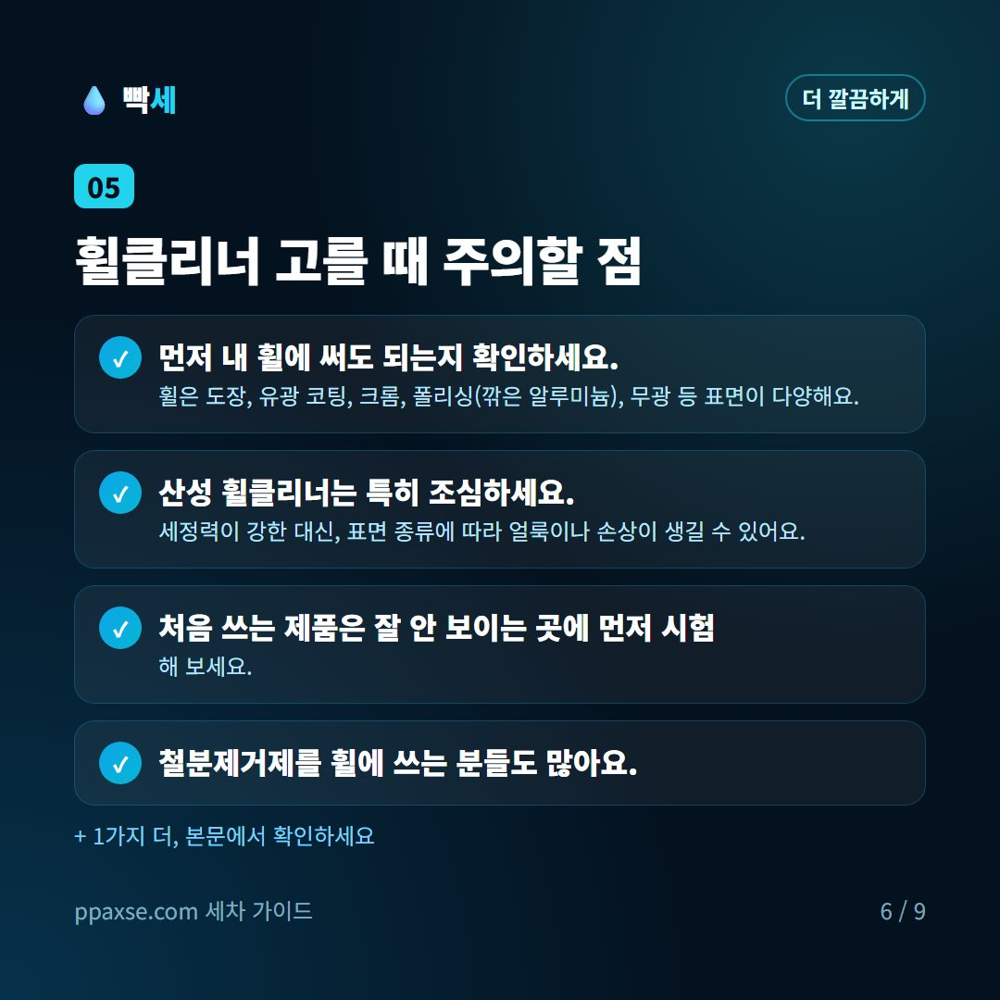
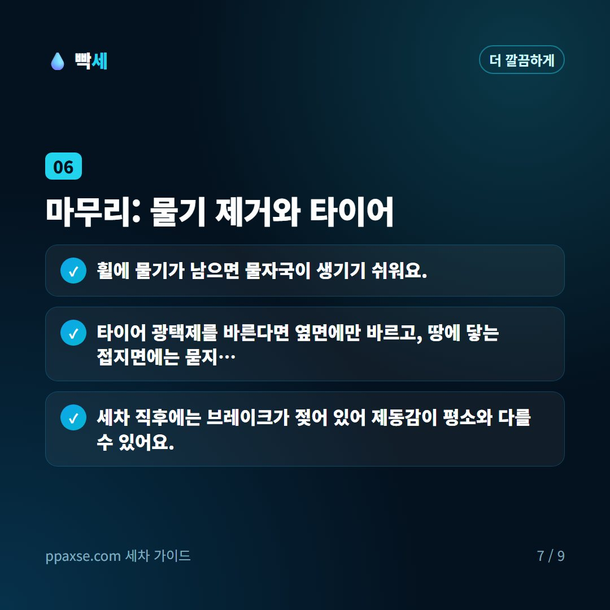

휠 세척 방법과 순서 — 휠클리너 쓸 때 주의할 점
차체는 반짝이는데 휠만 거뭇하면 차가 덜 깨끗해 보여요. 휠은 차에서 가장 빨리, 가장 끈질기게 더러워지는 곳이에요. 특히 겨울에는 브레이크 분진에 제설제와 흙탕물까지 더해져요.

휠 닦는 방법도 사람마다 조금씩 달라요. 이 글은 많은 분들이 쓰는 방법을 기본으로 정리하고, 다르게 하는 분들의 이유도 함께 적었어요.
휠은 왜 이렇게 안 닦일까요?

휠에 붙는 시커먼 때의 상당 부분은 브레이크 분진이에요. 브레이크를 밟을 때 패드와 디스크가 마찰하면서 나오는 가루인데, 쇳가루가 섞여 있고 브레이크 열 때문에 휠 표면에 눌어붙기 쉬워요. 그래서 고압수만으로는 잘 안 빠지고, 오래 두면 점점 더 지우기 어려워져요. 휠 안쪽과 휠하우스에는 도로의 흙·기름때, 겨울에는 제설제까지 쌓여요.
먼저 꼭 지킬 것 세 가지

- 휠이 식은 뒤에 시작하세요. 주행 직후에는 휠과 브레이크가 뜨거워요. 이때 세제를 뿌리면 금방 말라붙어 얼룩이 남을 수 있고, 제품에 따라 표면이 상할 수도 있어요. 세차장에 도착하면 다른 준비를 먼저 하며 잠시 식히는 분들이 많아요.
- 휠클리너는 말리지 마세요. 뿌린 채로 마르면 얼룩이 생기기 쉬워요. 제품에 적힌 시간만 두고 충분히 헹궈 주세요.
- 휠용 도구는 따로 쓰세요. 휠을 닦은 솔이나 미트에는 쇳가루와 모래가 남아 있어요. 그걸로 차체를 닦으면 흠집이 날 수 있어요.
많이 쓰는 휠 세척 순서

- 고압수로 먼저 불리기 — 휠 표면, 스포크 사이, 휠 안쪽, 휠하우스까지 헐거운 때를 먼저 떨어뜨려요. 이 단계에서 모래를 많이 빼 둘수록 다음 단계에서 흠집 걱정이 줄어요.
- 휠클리너 또는 세정제 뿌리기 — 제품 안내대로 뿌리고 잠깐 기다려요.
- 솔로 문지르기 — 휠 표면, 스포크 사이, 너트 주변, 안쪽 순서로 닦아요. 휠 안쪽은 손이 잘 안 닿아서, 긴 휠 전용 솔을 쓰는 분들이 많아요.
- 타이어 옆면 닦기 — 타이어 옆면에도 갈색 때가 끼어요. 거친 솔로 문질러 주면 훨씬 깔끔해져요.
- 충분히 헹구기 — 세제가 남지 않게 휠 안쪽과 너트 구멍까지 꼼꼼히 헹궈요.
휠 네 개를 한꺼번에 뿌리고 차례로 닦는 분도 있고, 한 짝씩 뿌리고 닦고 헹구는 분도 있어요. 빡세는 한 짝씩 하는 쪽을 권하는 편이에요. 세제가 마를 틈이 적고, 셀프세차장 시간 안에 놓치는 곳 없이 끝내기 쉽기 때문이에요. 다만 날이 선선하고 손이 빠르다면 한꺼번에 해도 괜찮아요. 정답이라기보다 빡세가 생각하는 해답에 가까워요.
휠을 먼저 닦을까, 나중에 닦을까

보통은 차체보다 휠을 먼저 닦는 분들이 많아요. 휠을 닦을 때 튄 더러운 물과 세제가 이미 닦은 차체에 다시 묻는 걸 막을 수 있어서예요. 가장 더러운 곳을 먼저 처리해 두면 마음도 편하고요.
이런 방법도 있어요. 차체를 씻으면서 흘러내린 오염이 결국 휠로 떨어지니 휠은 마지막에 닦는다는 분들도 있어요. 또 예비 세척만 차 전체에 먼저 하고, 휠을 닦은 뒤 차체 본 세척으로 넘어가는 분들도 있어요. 어느 쪽이든 휠 도구와 차체 도구를 섞지 않는 것만 지키면 큰 문제는 없어요.
휠클리너 고를 때 주의할 점

- 먼저 내 휠에 써도 되는지 확인하세요. 휠은 도장, 유광 코팅, 크롬, 폴리싱(깎은 알루미늄), 무광 등 표면이 다양해요. 제품 뒷면에 쓸 수 없는 휠 종류가 적혀 있는 경우가 많으니 꼭 읽어 보세요.
- 산성 휠클리너는 특히 조심하세요. 세정력이 강한 대신, 표면 종류에 따라 얼룩이나 손상이 생길 수 있어요. 잘 모르겠다면 중성에 가까운 제품이나 일반 카샴푸부터 써 보는 게 안전해요.
- 처음 쓰는 제품은 잘 안 보이는 곳에 먼저 시험해 보세요.
- 철분제거제를 휠에 쓰는 분들도 많아요. 쇳가루와 반응하면 보라색으로 변하는 제품이 많아서, 분진이 녹아 나오는 게 눈에 보여요.
- 화학제품을 쓸 때는 장갑을 끼고, 바람 부는 날에는 얼굴 쪽으로 날리지 않게 주의하세요. 다른 세제와 섞어 쓰지 마세요.
마무리: 물기 제거와 타이어

- 휠에 물기가 남으면 물자국이 생기기 쉬워요. 휠용 타월을 따로 두고 닦거나, 에어건이 있다면 너트 구멍과 스포크 틈의 물을 불어내면 편해요.
- 타이어 광택제를 바른다면 옆면에만 바르고, 땅에 닿는 접지면에는 묻지 않게 하세요. 미끄러울 수 있어요.
- 세차 직후에는 브레이크가 젖어 있어 제동감이 평소와 다를 수 있어요. 출발할 때 브레이크를 살짝 몇 번 밟아 확인해 주세요.
겨울철 하부·휠 관리는 겨울철 셀프세차 방법과 주의점에도 정리해 두었어요. 휠까지 꼼꼼히 닦으려면 온수나 에어건, 하부세차가 있는 세차장이 편해요. 이런 시설 정보는 빡세 지도에서 이용자들이 함께 채워가고 있어요. 지역별 세차장 모음에서 우리 동네 세차장을 찾아보세요.
셀프세차·노터치·손세차를 종류별로 골라 보고, 폼건·온수·하부세차 같은 시설 정보도 확인할 수 있어요.
🗺️ 세차장 지도 열기✏️ 자주 가는 세차장에 한마디 남기기🎁 한마디를 남기면 가입 없이도 매주 기프티콘 추첨에 응모돼요.